CESC · RNA-seq: contagens brutas (GDC)
STAR - Counts (GENCODE v36) · gerado em 21/10/2026 19:58
50,5 Mtamanho mediano
0,62dispersão mediana α
16.872genes
306amostras tumorais
3amostras normais
0,0%valores faltantes
Fonte: API do GDC (STAR - Counts)
Principais resultados
- Bibliotecas de 18,6 a 105,4 milhões de leituras (mediana 50,5). 43.215 de 60.660 features têm leitura em pelo menos 10% das amostras.
- A variância cresce bem acima da média: a dispersão mediana da binomial negativa é α=0.62 (para features com média > 10). Isso descarta um modelo Poisson e indica binomial negativa (ou Poisson-lognormal) na verossimilhança.
- A fração de zeros é compatível com a binomial negativa (diferença mediana -1,2%); inflação de zeros não parece necessária.
- Em média 8,7% das leituras de cada amostra vão para as 20 features mais abundantes (MT-CO1, KRT5, MT-ND4).
- Genes codificadores de proteína recebem 97,4% das leituras (mediana).
- 16.872 genes medidos em 309 amostras (306 tumorais e 3 normais); 0,0% dos valores estão faltando.
- Os dois primeiros componentes principais explicam 16,0% e 6,5% da variância das features mais variáveis.
- Correlação mediana entre amostras: 0,54.
- Tumor x normal: 2486 genes diferentes com FDR < 5% (1791 maiores no tumor, 695 maiores no normal; 3 pacientes têm o par tumor-normal).
- Mais aumentados no tumor: ENSG00000161800.13, ENSG00000100167.20, ENSG00000172244.9, ENSG00000142856.17, ENSG00000274825.1, ENSG00000188883.5, ENSG00000131650.14, ENSG00000115297.11.
- Mais reduzidos no tumor: ENSG00000079931.15, ENSG00000131943.18, ENSG00000104671.8, ENSG00000160746.13, ENSG00000175155.11, ENSG00000123143.13, ENSG00000137486.17, ENSG00000266916.7.
- Associações clínicas com p < 0,05 nos componentes principais: PC2 com idade (p=0.04); PC2 com sobrevida (p=0.0043).
Biblioteca
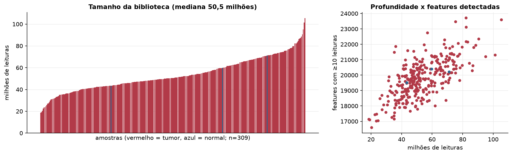
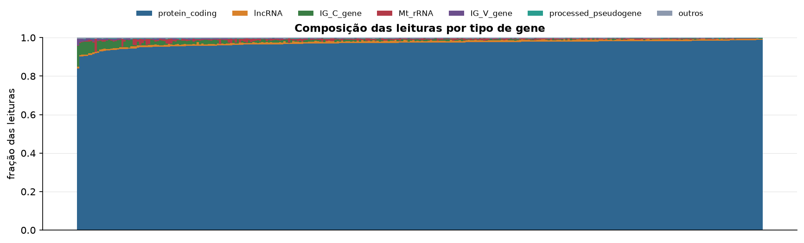
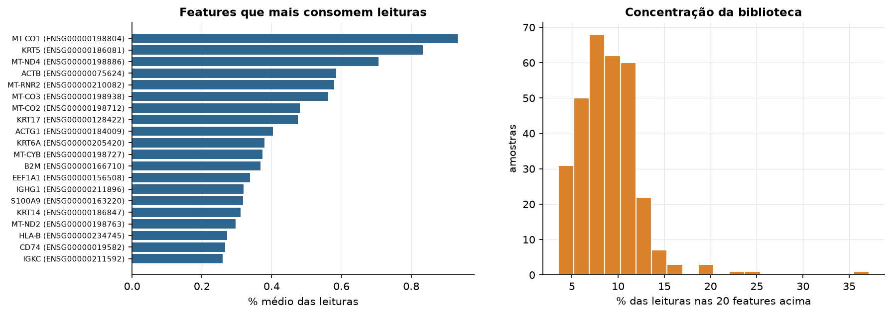
Sobredispersão e zeros
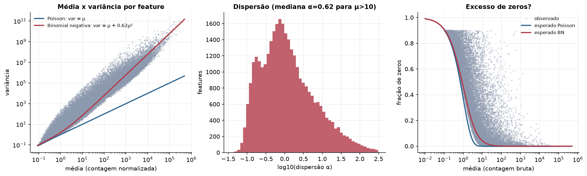
Exploração em log2(CPM+1)
Features com CPM ≥ 1 em pelo menos 20% das amostras (16.872 features).
Distribuição dos valores
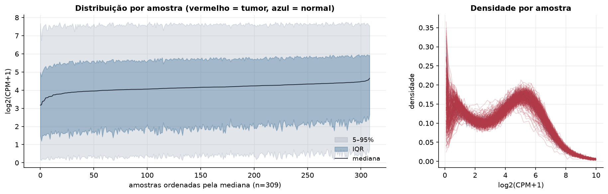
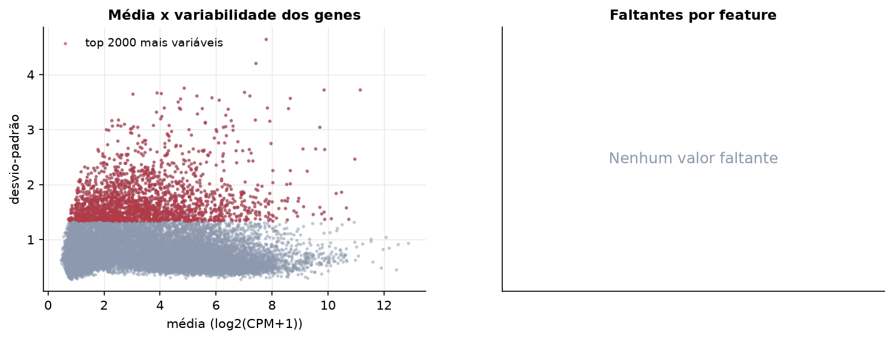
Estrutura das amostras
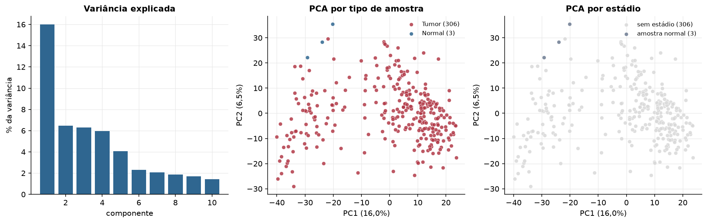
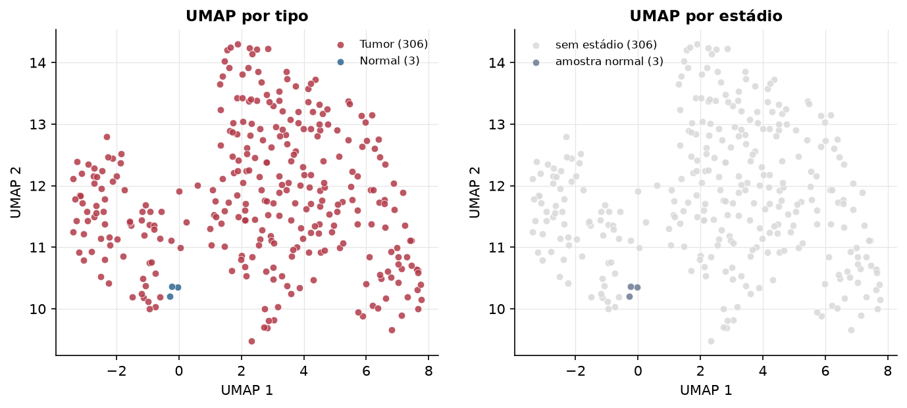
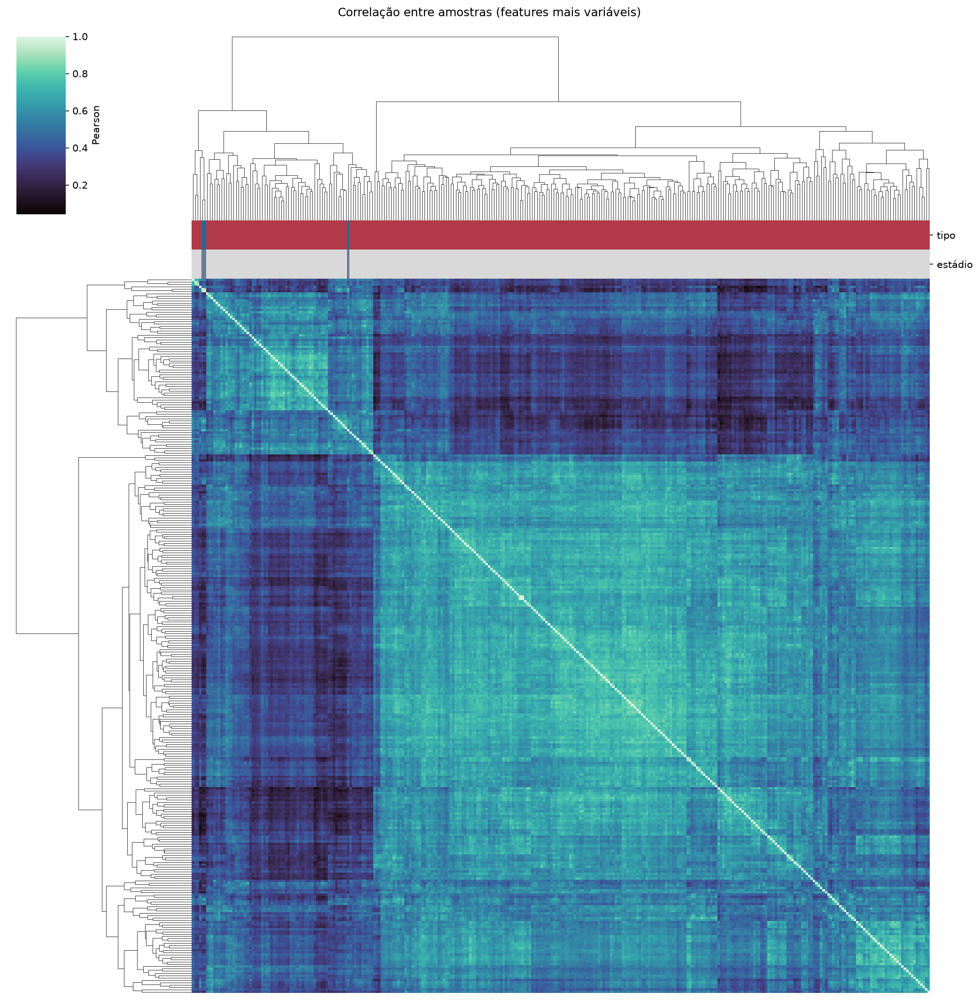
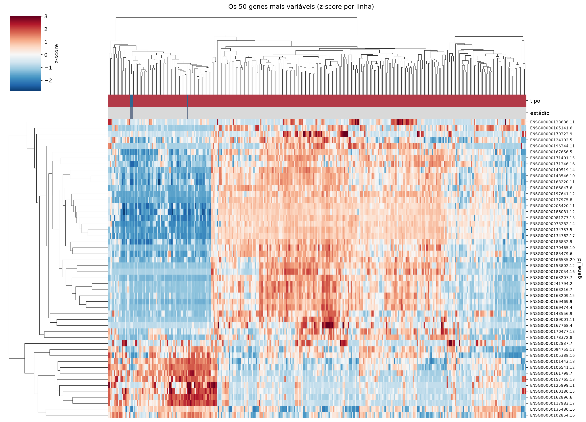
Tumor x normal
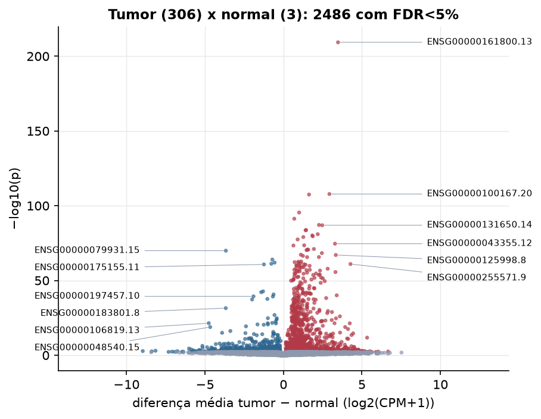
Features mais diferentes entre tumor e normal
| gene_id | diferenca_tumor_menos_normal | t | p | fdr |
|---|---|---|---|---|
| ENSG00000161800.13 | 3.478 | 103.118 | 5.11e-210 | 8.62e-206 |
| ENSG00000100167.20 | 2.928 | 35.211 | 1.53e-108 | 1.29e-104 |
| ENSG00000172244.9 | 1.629 | 42.637 | 3.42e-108 | 1.92e-104 |
| ENSG00000142856.17 | 0.998 | 30.906 | 3.56e-96 | 1.5e-92 |
| ENSG00000274825.1 | 0.69 | 30.482 | 5.12e-92 | 1.73e-88 |
| ENSG00000188883.5 | 2.263 | 28.723 | 7.11e-88 | 2e-84 |
| ENSG00000131650.14 | 2.472 | 30.591 | 1.16e-87 | 2.8e-84 |
| ENSG00000115297.11 | 1.443 | 27.702 | 1.85e-84 | 3.91e-81 |
| ENSG00000205890.3 | 1.411 | 27.695 | 2.53e-84 | 4.74e-81 |
| ENSG00000204949.9 | 2.186 | 26.625 | 1.15e-81 | 1.94e-78 |
| ENSG00000145681.11 | 1.838 | 26.436 | 7.07e-81 | 1.08e-77 |
| ENSG00000174871.11 | 1.869 | 30.133 | 2.88e-80 | 4.05e-77 |
| ENSG00000113161.16 | 1.266 | 30.897 | 8.78e-80 | 1.14e-76 |
| ENSG00000196747.4 | 0.904 | 25.666 | 3.5e-78 | 4.21e-75 |
| ENSG00000043355.12 | 3.284 | 31.874 | 2.49e-75 | 2.8e-72 |
| ENSG00000234602.9 | 1.32 | 26.948 | 3.12e-74 | 3.3e-71 |
| ENSG00000225345.3 | 0.634 | 24.515 | 4.38e-74 | 4.35e-71 |
| ENSG00000273760.1 | 1.939 | 23.987 | 8.81e-72 | 8.26e-69 |
| ENSG00000283098.2 | 1.531 | 23.728 | 2.23e-71 | 1.98e-68 |
| ENSG00000225697.13 | 1.577 | 32.521 | 2.5e-71 | 2.11e-68 |
| ENSG00000139865.16 | 1.469 | 24.431 | 4.87e-71 | 3.91e-68 |
| ENSG00000079931.15 | -3.67 | -36.12 | 1.19e-70 | 9.13e-68 |
| ENSG00000227640.3 | 2.448 | 26.109 | 4.83e-69 | 3.55e-66 |
| ENSG00000267123.7 | 1.111 | 22.95 | 5.8e-68 | 4.08e-65 |
| ENSG00000125998.8 | 3.335 | 22.738 | 9.07e-68 | 6.12e-65 |
| ENSG00000164362.21 | 1.24 | 22.607 | 3.77e-67 | 2.45e-64 |
| ENSG00000142700.12 | 2.26 | 22.548 | 2.2e-66 | 1.37e-63 |
| ENSG00000256663.1 | 1.508 | 37.675 | 2.42e-66 | 1.46e-63 |
| ENSG00000131943.18 | -0.708 | -24.068 | 1e-64 | 5.82e-62 |
| ENSG00000166796.12 | 1.129 | 21.739 | 1.93e-63 | 1.08e-60 |
Associação com variáveis clínicas
p-valores da associação dos três primeiros componentes principais (só tumores) com estádio (Kruskal-Wallis), sexo (Mann-Whitney), idade (Spearman) e sobrevida global (Cox univariado).
| estádio (Kruskal) | sexo (Mann-Whitney) | idade (Spearman) | sobrevida OS (Cox) | |
|---|---|---|---|---|
| PC1 (16,0%) | 0.936 | 0.98 | ||
| PC2 (6,5%) | 0.04 | 0.004 | ||
| PC3 (6,3%) | 0.622 | 0.71 |